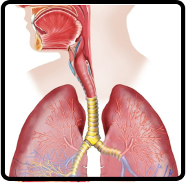

RESPIRATÓRIO
O sistema respiratório é o conjunto dos órgãos responsáveis pela absorção do oxigênio do ar pelo organismo e da eliminação do gás carbônico retirado das células. Ele é formado pelas vias respiratórias e pelos pulmões. Os órgãos que compõem as vias respiratórias são: cavidades nasais, faringe, laringe, traqueia e brônquios.
